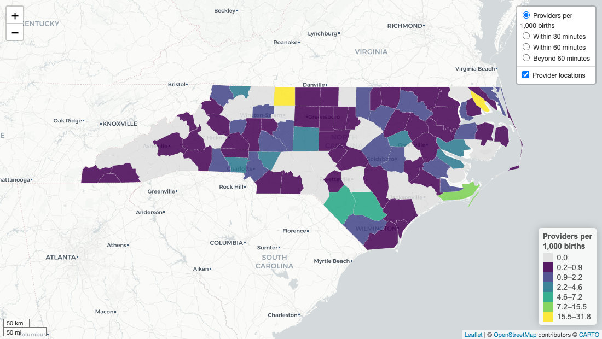
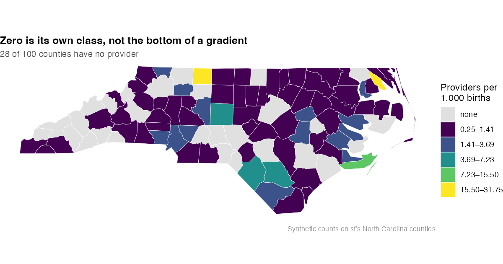

Geographic mapping tools for healthcare access and mystery-caller studies: county choropleths, drive-time coverage surfaces, provider dot maps, and the label and legend furniture those need.
The package exists because the same map kept getting rebuilt. A supply choropleth with drive-time surfaces over it, a legend that follows the active layer, provider dots that stay clickable — three separate studies hand-built that, differently each time, and the differences were bugs rather than choices.
Install
# install.packages("remotes")
remotes::install_github("mufflyt/mysterymaps")Mapping dependencies (leaflet, leaflet.extras, sf, ggplot2, htmlwidgets) are Suggests: install what your map actually uses.
A leaflet access map
One call assembles the choropleth, the coverage surfaces as mutually exclusive layers, the legend switcher and the framing.

library(mysterymaps)
library(sf)
nc <- st_read(system.file("shape/nc.shp", package = "sf"), quiet = TRUE) |>
st_transform(4326)
# sf's nc has no provider counts; these are synthetic, seeded, and exist only
# to exercise the scales (see data-raw/make_readme_figures.R).
set.seed(42)
nc$providers <- rpois(nrow(nc), 1.2)
nc$births <- round(runif(nrow(nc), 120, 4200))
nc$rate <- round(1000 * nc$providers / nc$births, 2)
nc$.tooltip <- sprintf("<b>%s</b><br/>%s", nc$NAME,
mysterymaps_pluralize(nc$providers, "provider"))
m <- mysterymaps_county_access_map(
counties = nc,
value_col = "rate",
label_col = ".tooltip",
popup_col = ".popup",
coverage = list("Within 30 minutes" = band_30,
"Within 60 minutes" = band_60,
"Beyond 60 minutes" = gap),
coverage_colors = c("#08519c", "#3182bd", "#d94801"),
legend_title = "Providers per<br/>1,000 births",
bounds = c(33.7, -84.4, 36.7, -75.4))Add provider dots and a search box afterwards, when they need their own popups:
m <- m |>
leaflet::addCircleMarkers(
data = providers, radius = 4, label = ~name, popup = ~popup_html,
options = leaflet::pathOptions(pane = "pts"), # pane keeps them clickable
group = "Providers") |>
mysterymaps_zoom_gated_labels("Providers", min_zoom = 9, max_labels = 400) |>
mysterymaps_name_search(placeholder = "Search provider name…")Building a map that is not the county template? The pieces are exported individually:
m <- leaflet::leaflet() |>
leaflet::addProviderTiles("CartoDB.PositronNoLabels") |>
leaflet::addPolygons(data = counties, fillColor = ~pal(rate), group = "Supply") |>
mysterymaps_register_base_legend("Supply", key = "supply") |>
mysterymaps_add_coverage_surfaces(
surfaces = list("Within 30 minutes" = band_30),
colors = "#08519c") |>
leaflet::addLayersControl(baseGroups = c("Supply", "Within 30 minutes"))
m <- mysterymaps_base_legend_switcher(m, default = "Supply")A static map
mysterymaps_jenks_zero_scale() is renderer-agnostic — it returns a colour function plus legend vectors, so it drops into ggplot2 as readily as leaflet.

library(ggplot2)
sc <- mysterymaps_jenks_zero_scale(nc$rate, k = 5, digits = 2)
sc$leg_labs[1] <- "none" # "0.00" is accurate; "none" is clearer
ggplot(nc) +
geom_sf(aes(fill = sc$color(rate)), colour = "white", linewidth = 0.15) +
scale_fill_identity(guide = "legend", breaks = sc$leg_cols,
labels = sc$leg_labs, name = "Providers per\n1,000 births") +
theme_void()Other static (ggplot2) maps:
| Function | Produces |
|---|---|
mysterymaps_geographic_map() |
state choropleth of an outcome rate |
mysterymaps_map_acceptance_rate() |
state or HRR acceptance-rate choropleth |
mysterymaps_hrr_maps() |
Hospital Referral Region maps, by trait |
Why the defaults are what they are
Each of these is a bug someone shipped first.
Zero is a category, not a low value. An equal-interval bottom bin of 0.0–0.5 renders a county with no provider identically to one with a low rate. On one national map that was 1,619 of 3,109 counties — over half the map, in the class the study was about. mysterymaps_jenks_zero_scale() gives zero its own colour and Jenks-classifies only the positive values, which also suits provider rates being heavily right-skewed.
Coverage surfaces are base groups, not overlays. A translucent surface laid over a viridis choropleth multiplies two colour scales into a third belonging to neither. They are alternative views of a map, not additions to it.
leaflet::addLegend(group=) does nothing for base groups. It follows overlay groups only, so a map with four base layers renders all four legends at once, stacked down the edge. mysterymaps_base_legend_switcher() is the fix, and it is why legends are registered rather than just added.
Markers need a pane. Without addMapPane("pts", zIndex = 650) and pathOptions(pane = "pts"), dots draw above a choropleth but do not reliably hit-test — clicks land on the polygon underneath. The template sets the pane up for you.
No marker clustering. Clustering replaces the data with a count and makes the reader zoom repeatedly to learn anything. Draw every point on a canvas renderer (preferCanvas = TRUE) and gate the labels with mysterymaps_zoom_gated_labels() instead.
Widgets stay self-contained. mysterymaps_name_search() uses the plugin bundled with leaflet.extras rather than a CDN. A saved map that needs the network for its search box fails silently offline, and a control that silently does nothing is worse than an absent one.
Labels
Counts and nouns that agree, and administrative text fit to read:
mysterymaps_pluralize(c(0, 1, 3, NA), "midwife", "midwives")
#> "0 midwives" "1 midwife" "3 midwives" NA
mysterymaps_format_credentials(c("C.N.M.", "RN, CNM", "cnm/whnp"))
#> "CNM" "RN, CNM" "CNM, WHNP"
mysterymaps_place_title_case("EGG HARBOR TOWNSHIP, NJ")
#> "Egg Harbor Township, NJ"NA propagates as NA rather than becoming a count, because “NA midwives” and “0 midwives” are different claims; substitute your own placeholder at the point of display. mysterymaps_format_credentials() formats and deliberately does not classify — folding ARNP into APRN is a substantive claim about credentialing that belongs in a reviewed classifier, not a label helper.
mysterymaps_notes_panel() renders the collapsible caveat panel with a data vintage list, once, instead of repeating caveats in every popup.
Isochrones and overlap
| Function | Purpose |
|---|---|
mysterymaps_create_isochrones() |
drive-time polygons for one location |
mysterymaps_isochrones_for_df() |
the same over a data frame of locations |
mysterymaps_calculate_overlap() |
block-group × isochrone area overlap |
mysterymaps_gate_provider_coverage() |
fail loudly when providers fall outside a surface |
mysterymaps_clear_isochrone_cache() |
drop the cached routing results |
mysterymaps_geocode() |
geocode an address file |
Reproducing the figures
Both use the North Carolina counties shipped inside sf, with synthetic seeded counts — no API key, no network, no private data. The counts exercise the scales; they say nothing about North Carolina.
Citation
citation("mysterymaps")CITATION.cff and CITATION.bib carry the same entry for GitHub and reference managers. ORCID 0000-0002-2044-1693.
Contributing
See CONTRIBUTING.md. The first rule is to search the cross-repo function index before writing a helper: this ecosystem has been bitten repeatedly by the same function existing twice, with load order deciding which one ran.
Related
-
mufflyaccess— SSOT constants and safe arithmetic: canonical bands, CONUS geography,safe_rate() -
twostep— E2SFCA accessibility, population-weighted coverage, the access-language guard -
isochrones— routing, water masks, the isochrone pipeline -
cliff— workforce retirement modelling
vignette("canonical-functions") maps hand-rolled code to the canonical call that already exists across these packages.